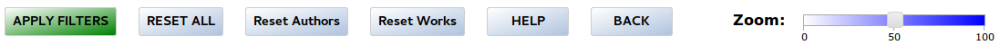

1. Time period seek-bar
As it's not possible to know precisely when ancient texts where written, it's necessary to estimate the most probable time period; therefore, every work is represented as a statistical function (normal or trapezoidal) based on several factors, such as it's author's lifetime.
The seek-bar at the top of the page is useful to select and obtain statistics for a shorter time period. Only the works within the selected period are considered. In case the selected time period cuts the work's estimated period, then not the whole text is considered but only the number of works, words and chars corresponding to the part inside the selection. If a work is cut its density function is represented only as a line, without filling.
Whole work:
Partial work:
Changes in the time period seek-bar are NOT applied immediately. To apply changes you have to click on the “Apply filters” button.
2.
Category and graph selection
a) Category selection
Works are classified into three categories: Content, Genre and Style. By clicking on any category title, the actual selection is inverted, so if we want to select all values of a category we can do it with only one click.
The colors of the values are the same used in the graph to draw the density functions and the cumulative functions.
Actions on this menu are applied immediately to the graph.
Only selected category values are included to construct the filter. If no value of a category is selected then the category is ignored. For example, to draw only Arithmetical works it's not necessary to select all values from the other categories. The filter string created in this example would be:
(d.Content == "arithmetical")
b) The Graph menu
This menu determines what value is compared and represented by the graph: Works, Words, or Chars.
c) Display results by
This menu works like a radio-button.
The density functions representing the works in the graph are colored according to the color of the category values selected in this menu. The panel situated at the bottom-right of the page also shows only the statistics corresponding to the selected category.
d) Relative results
This check-box determines if the cumulative functions in the graph are calculated in relation to the total works in the database or only to the works in the current selection. The default value is "checked".
3. Data / Date / Authors
/ Works and Lines
a) Data / Date
Some dates or data of the works contained in the database are not exact. With this menu we can filter by exact/inexact data/dates. Any change in this menu is applied immediately.
b) Authors
The selection can be filtered by author if the check-box "Filter authors" and some author are selected.
If an author is selected / deselected automatically all works of this author are selected / deselected too.
Changes in the “Filter authors” check-box are applied immediately but changes on the individual authors do NOT. If the check-box “Filter authors” is already selected we can use the yellow button “Apply filters” to apply all new changes to the graph.
c) Works
The selection can be filtered by works if the check-box “Filter works” and some work are selected.
If a work is selected automatically it's author is selected too. If ALL works of any author are deselected it's author is deselected too.
Changes in the “Filter works” check-box are applied immediately but changes on the individual works do NOT. If the check-box “Filter works” is already selected we can use the button “Apply filters” to apply all new changes to the graph.
d) Lines
With this menu the lines corresponding to the Global cumulative function, the cumulative function for every category and the global density function can be hidden or shown.
Note that the cumulative functions of the categories are only drawn if any value of the corresponding category is selected.
Changes in this menu are applied immediately. Click on the title (“Lines:”) inverts the current selection.
4. Bottom buttons menu

a) Apply filters
This button applies all pending changes made to the time period seek-bar and to the authors and works check-boxes.
b) Reset all
This button resets the whole web-site to its default values.
c) Reset Authors
De-select all authors check-boxes. Note that this action does NOT affect to the works check-boxes.
d) Reset Works
De-select all works check-boxes. Note that this action does NOT affect to the authors check-boxes.
e) Zoom
In the case of the
density functions the graph doesn't represent absolute values, but
only the relation between them. So it's possible to use the zoom
seek-bar to scale the graph to the desired size. The lines
corresponding to the cumulative functions are not affected by this
seek-bar.
f) Help
Opens a new window with the usage instructions.
g) Back
Return to the main page.
5. Statistics
The panel at the bottom shows the global and partial statistics of the
current selection.
The first line of the bottom-left panel shows the number of selected works and the percentage in relation to the total works of the database. Note that this value can include decimals as the time period selection could cut some works as showed at the first section of this help.
The second and third lines show the number of words/chars selected in relation to the sum of the total words/chars in the database.
The bottom-right panel depends on the selected category (see section 2b). The first line shows the percentage of works/words/chars of every value in the currently selected category, the percentage in relation to the total selected works/words/chars and the percentage in relation to the total works/words/chars of all works in the database.
6. The
graph
The
X-axis represents time
in years and the Y-axis represents percentage from 0 to 100%.
a)
Single texts: After applying the filters, the resulting graph
shows the density function of every single work. Depending on the
selected value in the menu “Graph” (see section 2b) it represents
the number of works, the number of works or the number of chars of
the work. Passing the mouse over the representations a tool-tip shows
some details of the hovered work. A click on the text sticks another
tool-tip at the top-left of the graph with the details of the text.
b)
CDFs. The colored lines represent the cumulative density
functions of the selected category-values. To show the cdf without
affecting the result set simply select all the values of any
category. Hovering over the line shows a tool-tip with the name of
its corresponding category-values and a list with the authors and works
corresponding to this year AND CATEGORY.
c) Total CDF. The black line represents the cumulative density function of all the results If the "Relative results" check-box is selected (see section 2d) this line should always end at the 100% value. A click on this line shows a list with the authors and works corresponding to this year (and ALL categories).
d)
Global density function.
The red line represents the density function of the current selection.